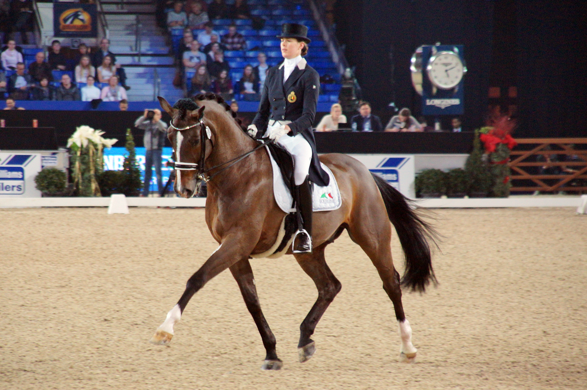

Bélgica revalida el título de la Copa de Naciones de doma en Lier ante ocho países
El equipo belga, dirigido por Jeroen van Lent, conquistó por segundo año consecutivo la FEI Dressage Nations Cup de Lier ante un campo de ocho naciones, confirmando el crecimiento de la disciplina en suelo nacional.

Bélgica logró retener la corona de la Copa de Naciones de doma disputada este sábado en Lier, repitiéndose como vencedora en casa tras inaugurar hace un año el palmarés de esta competición, la primera de su clase celebrada en el país. El cuarteto dirigido por el Chef d'Équipe Jeroen van Lent —integrado por Wim Verwimp con «Jedai de Massa», Charlotte Defalque con «First-Ste…» y otros dos binomios— se impuso en una jornada que evidenció el auge de la doma belga y su consolidación en el calendario internacional.
La prueba reunió a ocho selecciones nacionales en una cita que, tras su exitoso debut en 2024, duplica la visibilidad del circuito oficial de la FEI. La edición de este año confirmó el formato de cuatro binomios por equipo y refrendó a Lier como escenario de referencia en el panorama europeo de la disciplina. Con este triunfo, Bélgica refuerza su apuesta por la doma clásica en un contexto de creciente competitividad continental.
— Redacción de Hípica al Día